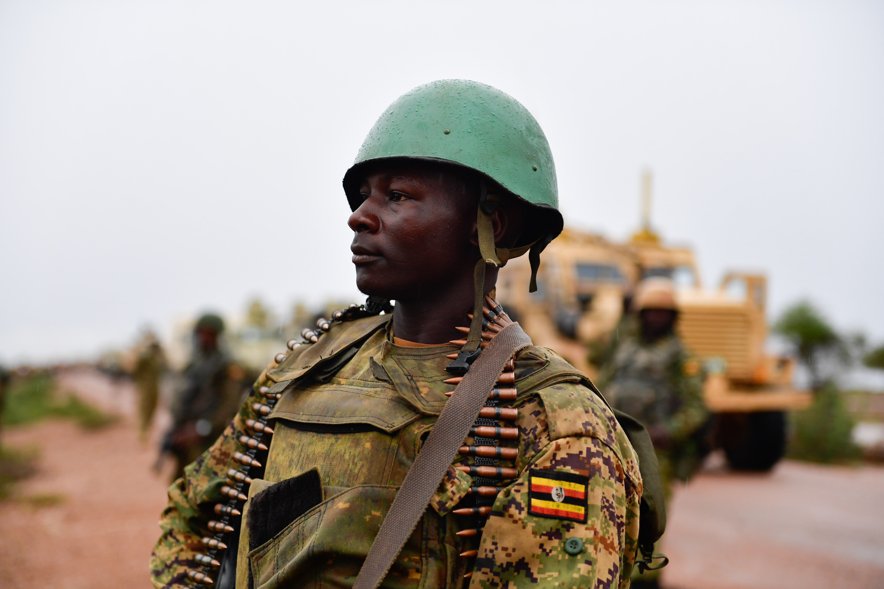

MAPS

War is a bad chisel with which to curve out tomorrow…
— African Proverb
ACLED collects real-time data on the locations, dates, actors, fatalities, and types of all reported political violence and protest events across Africa, the Middle East, Latin America & the Caribbean, East Asia, South Asia, Southeast Asia, Central Asia & the Caucasus, Europe, and the United States of America. This article will focus on a subset of event types.
df <- read.csv("archetypes/acled-visualizing-conflict/africa/africa-battles.csv", header = TRUE, stringsAsFactors = FALSE)
head(df, n = 10)battle_overtakes <- filter(df, SUB_EVENT_TYPE == "Non-state actor overtakes territory" )
head(battle_overtakes, n = 10)hot_zones <- data.frame("LONGITUDE" = battle_overtakes$LONGITUDE, "LATITUDE" = battle_overtakes$LATITUDE)
hot_zones$CLUSTER <- cutree(hclust(dist(hot_zones[,1:2])), 20)
hot_zones <- hot_zones %>%
group_by(CLUSTER) %>%
summarise(
minLONGITUDE = min(LONGITUDE, na.rm = T),
maxLONGITUDE = max(LONGITUDE, na.rm = T),
minLATITUDE = min(LATITUDE, na.rm = T),
maxLATITUDE = max(LATITUDE, na.rm = T),
cLONGITUDE = (minLONGITUDE + maxLONGITUDE) / 2,
cLATITUDE = (minLATITUDE + maxLATITUDE) / 2,
AREA = (maxLONGITUDE - minLONGITUDE) * (maxLATITUDE - minLATITUDE) + 10,
SIZE = n()
)
head(hot_zones, n = 10)# to limit bounds of map view
xmin <- min(battle_overtakes$LONGITUDE)
xmax <- max(battle_overtakes$LONGITUDE)
ymin <- min(battle_overtakes$LATITUDE)
ymax <- max(battle_overtakes$LATITUDE)ne_world <- ne_countries(scale = "small", returnclass = "sf")theme_opts <- theme(
text = element_text(family = "inconsolata"),
plot.title = element_text(color = "black", size = 14, face = "bold", family = "inconsolata"),
plot.subtitle = element_text(color = "black", size = 11, family = "inconsolata"),
plot.caption = element_text(color = "#555555", size = 10, family = "inconsolata"),
plot.background = element_blank(),
panel.grid = element_blank(),
panel.grid.major = element_blank(),
panel.grid.minor = element_blank(),
panel.background=element_rect(fill="#efc12b", colour="#efc12b"),
panel.border = element_blank(),
axis.text = element_blank(),
axis.line = element_blank(),
axis.ticks = element_blank(),
axis.title = element_blank(),
legend.position = "top",
legend.title = element_blank()
)
tooltip_css <- "background-color:#bf2a11;color:white;max-width:450px;padding:10px;"
v1 <- ggplot(data = ne_world) +
geom_sf(fill="#efc12b", color = darken("#efc12b", 0.2), size=0.5) +
geom_point(data = hot_zones, aes(x = cLONGITUDE, y = cLATITUDE, size = AREA), shape = 21, color = "#61987e", fill = "#ffffff", stroke = 1.5, alpha = 0.2) +
geom_point(data = hot_zones, aes(x = cLONGITUDE, y = cLATITUDE, size = AREA), shape = 21, color = "#61987e", fill = NA, stroke = 1.5) +
geom_point_interactive( data = battle_overtakes, aes(x=LONGITUDE, y=LATITUDE,
tooltip = paste0("Date: ", EVENT_DATE, "\nCountry: ", COUNTRY, "\nLocation: ", LOCATION, "\nDesc: ", NOTES), data_id = EVENT_ID_CNTY),
shape=21, size=1.5, color = "#bf2a11", fill = "#bf2a11") +
scale_size_continuous(range = c(8, 105), guide = "none") +
coord_sf(xlim = c(xmin * 1.1, xmax * 1.1), ylim = c(ymin * 1.70, ymax * 1.15)) +
labs(x=NULL,
y=NULL,
title = "Battle-Non-state actor overtakes territory",
subtitle="",
caption="hover point for details") +
theme_bw() +
theme_opts
girafe(ggobj = v1, width_svg = 14.5, height_svg = 16,
options = list(
opts_tooltip(css = tooltip_css),
opts_hover(css = "stroke-width:5px;"),
opts_sizing(rescale = TRUE, width = 0.6)
)
)